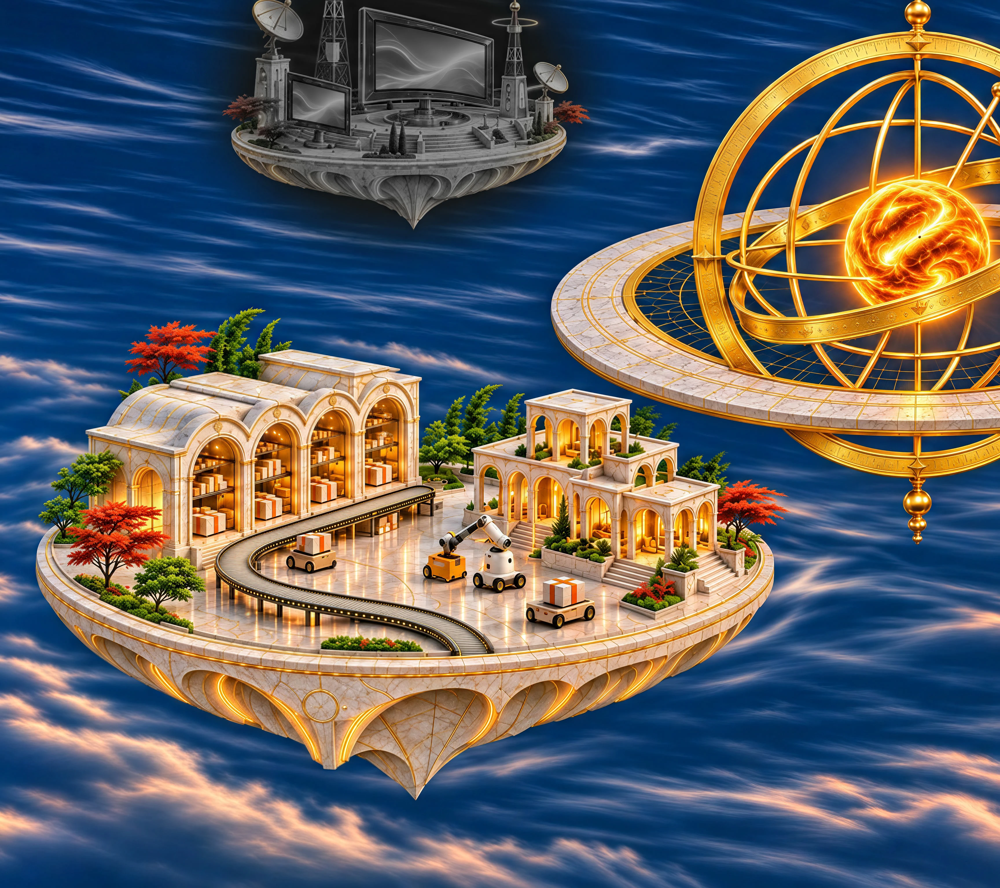

跨境电商中心 · noon
 待拍板 3
待拍板 3
SAR 1,240 今日广告花费
ROAS 3.18成员 4AI 员工 6/6 在岗
3 家店 · 4 个站点 · 2 个要关注：云屿商店 等你拍板
自媒体运营中心
起雾中 · 未接入
海外建站中心
起雾中 · 未接入
资源核心
SAR 6,020
今日销售 · 另 AED 1,610ROAS 3.18 / 保本 2.40AI 费用 ¥32.40本月预算余 50%
待 开 发
待 开 发